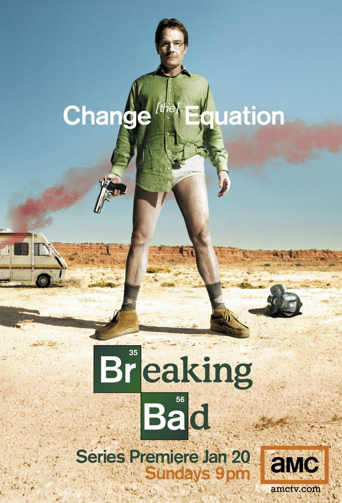
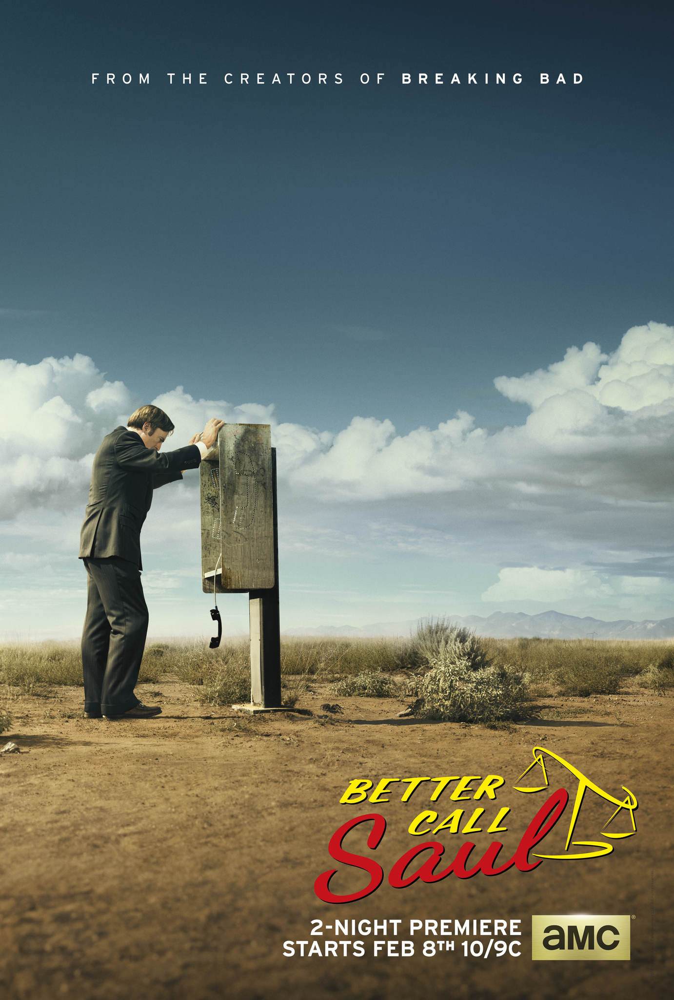
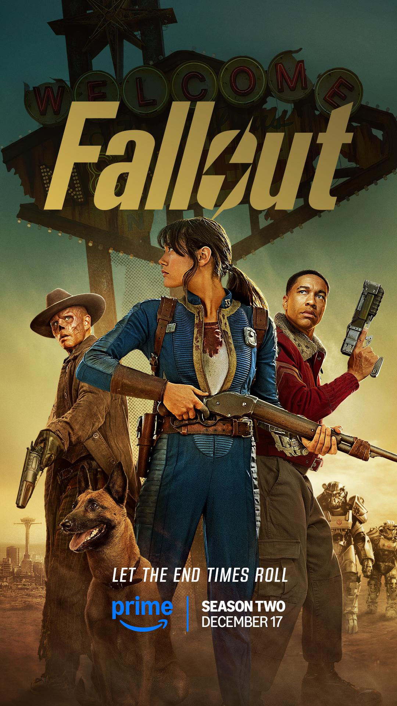
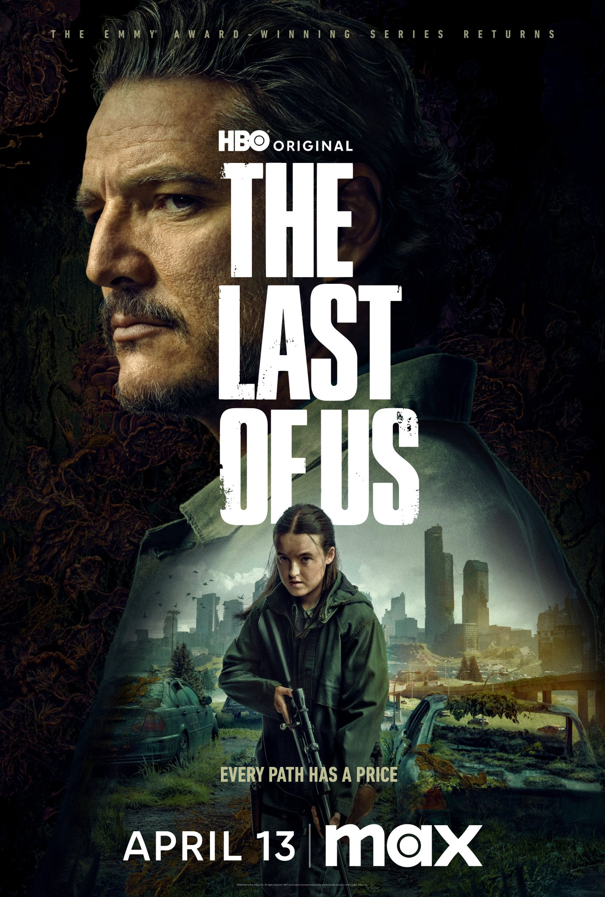
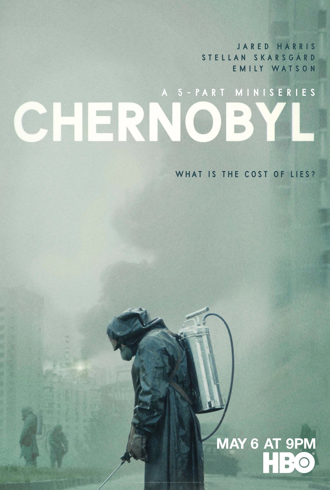
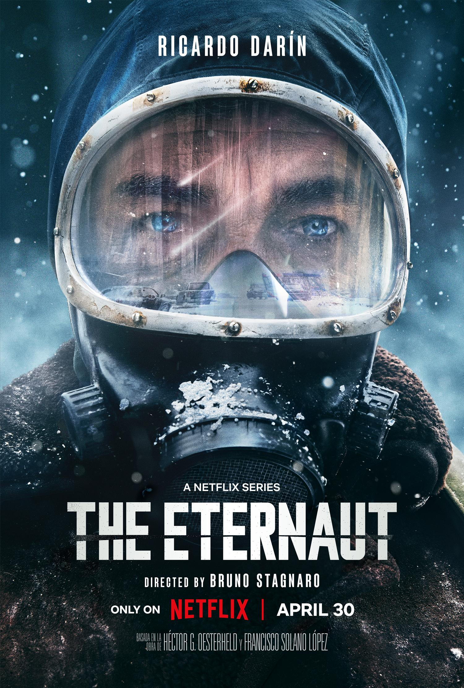
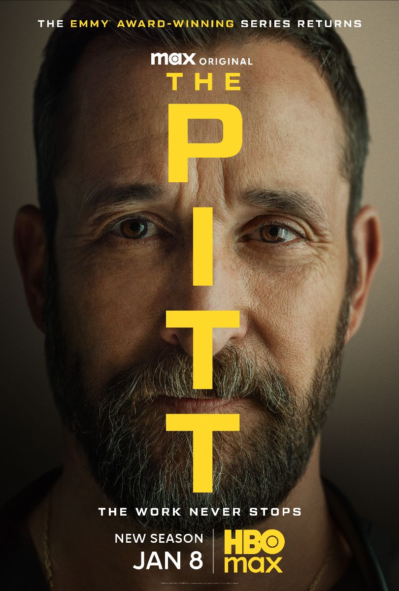

Breaking Bad
Un profesor de secundaria que ha sido diagnosticado con un inoperable cáncer de pulmón se dedica a producir y vender metanfetaminas con el fin de asegurar el futuro de su familia.
El drama delictivo de Vince Gilligan de 2008 narra la transformación moral a través de un profesor de química que cae en el negocio de la metanfetamina. Su precisión secuencial, tanto en las series como en la precuela y la película, redefinió la narrativa del antihéroe y el arte de la televisión de prestigio.

Series Destacadas





